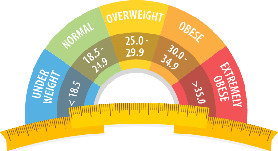

Used MySQL to clean and transform a global layoffs dataset by handling missing values, standardising formats, and removing duplicates. Performed exploratory data analysis to uncover trends across industries, companies, time periods, and regions.
Created an interactive Tableau dashboard analysing customer reviews to uncover trends in service quality and satisfaction. Highlighted key areas for improvement across the travel experience.

Cleaned and visualised survey data on data professionals using Power BI. Explored trends in career paths, tools, compensation, job satisfaction, and workplace preferences. Uncovered insights to better understand the evolving data industry landscape.

A Python project that calculates Body Mass Index (BMI) from user input and classifies the results into health categories like underweight, normal, or obese. Highlights basic data logic, conditional statements, and user interaction.

An interactive Excel dashboard analysing coffee order data to uncover customer preferences, order frequency, and sales trends.
Features dynamic charts, pivot tables, and slicers to explore product popularity, peak order times, and seasonal patterns.